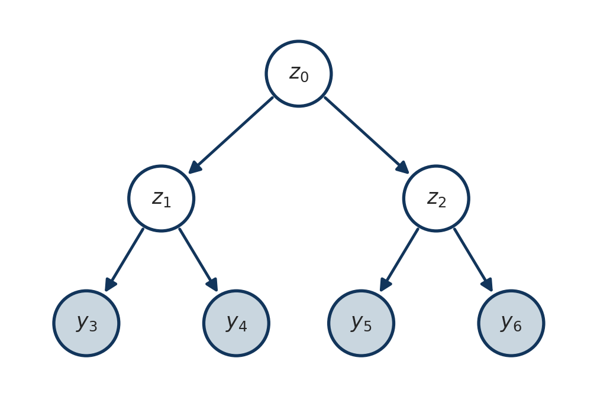
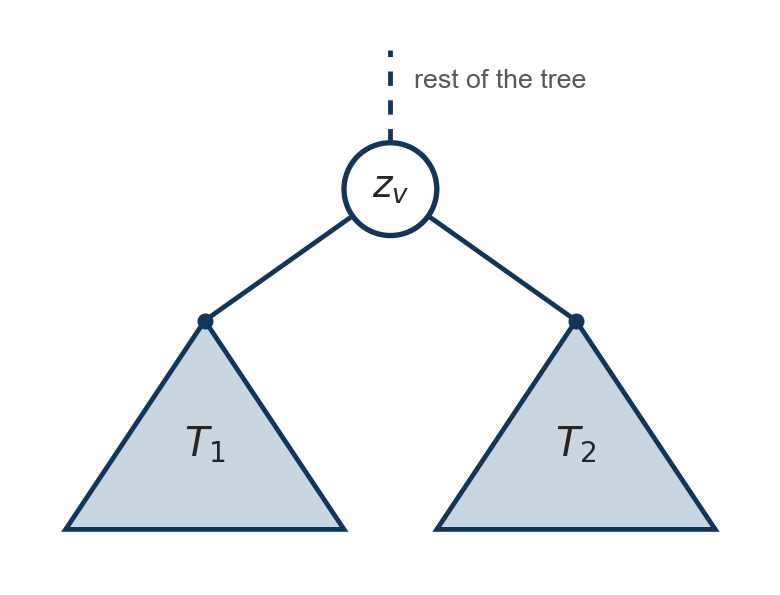
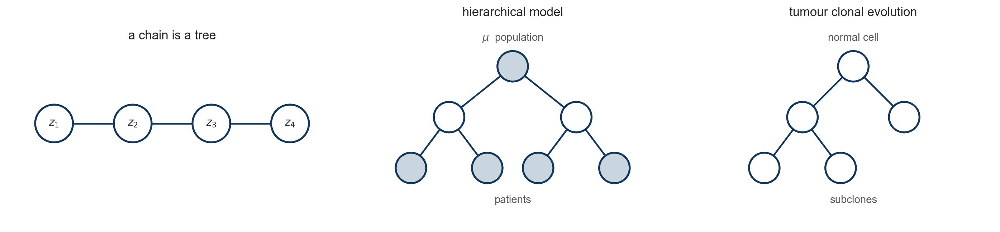
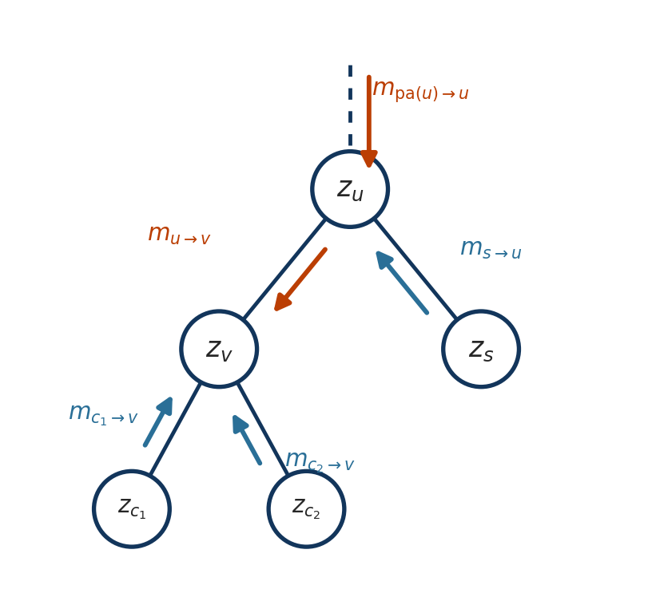
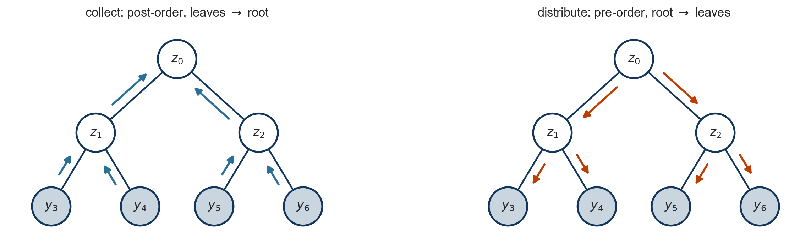
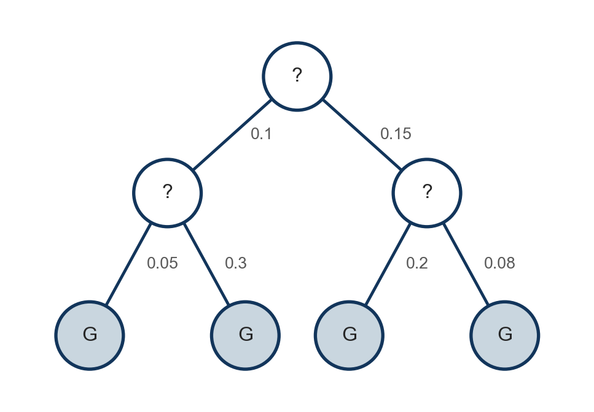

Belief propagation on trees
Department of Biostatistics and Computational Biology, University of Rochester Medical Center
Forward-backward turned a sum over \(K^T\) state paths into \(O(TK^2)\) work by pushing each sum as far inward as it would go.
In Lab 4 you built the data structure, wrote the two traversals, and simulated an alignment down a phylogeny. Today we hang the inference on that code, and then take the oldest tree model in biology seriously.
Node class and verify it against brute force and against forward-backward.An undirected graph is a tree if it is connected and has no cycles. Equivalently:
A tree structured model is a joint distribution whose factors each involve one node or one edge of some tree. The HMM is one: its factors are \(p(z_t \mid z_{t-1})\) on the edges and \(p(y_t \mid z_t)\) at the nodes, and the tree is a line.

Latent variables at the internal nodes, observations at the leaves. The HMM had one observation hanging off each latent variable; here the shape is richer, but the factorization is the same kind of object.
Exercise. Write down the joint distribution \(p(\mathbf{z}, \mathbf{y})\) of this model by following the arrows: one factor per node, conditioned on whatever points at it. How many terms does the likelihood \(p(\mathbf{y})\) sum over if each \(z\) takes \(K\) values?
Write \(\mathbf{z} = (z_1, \ldots, z_n)\) for the latent variables at the \(n\) nodes, one multivariate variable, and \(\mathbf{y}\) for the observations. For a directed tree with root \(r\), the chain rule along the arrows gives
\[ p(\mathbf{z}) = p(z_r) \prod_{v \neq r} p\big(z_v \mid z_{\text{pa}(v)}\big). \]
Each observation hangs off one node, so the joint with the data is
\[ p(\mathbf{z}, \mathbf{y}) = p(z_r) \prod_{v \neq r} p\big(z_v \mid z_{\text{pa}(v)}\big) \prod_{v} p(y_v \mid z_v), \]
where \(p(y_v \mid z_v) \equiv 1\) at a node with nothing observed. Each factor touches one node or one edge, and that is all the algorithm will use.

Let \(v\) be a node and let \(T_1, T_2\) be two subtrees hanging off it. In a tree structured model,
\[ p(z_{T_1}, z_{T_2} \mid z_v) = p(z_{T_1} \mid z_v) \; p(z_{T_2} \mid z_v). \]
The tree records this structure so we can read it off. Everything that follows is bookkeeping on top of this one fact.
The likelihood of the leaves sums the joint over every latent node:
\[ p(\mathbf{y}) = \sum_{z_1} \cdots \sum_{z_n} p(z_r) \prod_{v \neq r} p\big(z_v \mid z_{\text{pa}(v)}\big) \prod_{v} p(y_v \mid z_v). \]
\(K^n\) terms, where \(n\) is now the number of internal nodes rather than the length of a sequence.
Same disease, same cure. Push the sums inward.

Four leaves, three latent nodes, states in \(\{1, \dots, K\}\). Nothing is observed at the latent nodes themselves.
\[ p(\mathbf{y}) = \sum_{z_0} \sum_{z_1} \sum_{z_2} p(z_0) \, p(z_1 \mid z_0) \, p(z_2 \mid z_0) \, p(y_3 \mid z_1) \, p(y_4 \mid z_1) \, p(y_5 \mid z_2) \, p(y_6 \mid z_2) \]
\(z_1\) appears in three factors, \(z_2\) in three others, and none of the six involves both. Push each sum through everything it does not touch:
\[ p(\mathbf{y}) = \sum_{z_0} p(z_0) \underbrace{\Big[ \sum_{z_1} p(z_1 \mid z_0) \, p(y_3 \mid z_1) \, p(y_4 \mid z_1) \Big]}_{m_{1 \to 0}(z_0)} \underbrace{\Big[ \sum_{z_2} p(z_2 \mid z_0) \, p(y_5 \mid z_2) \, p(y_6 \mid z_2) \Big]}_{m_{2 \to 0}(z_0)}. \]
Each bracket depends only on \(z_0\) and only on the subtree below one child. Three sums of \(K^2\) terms instead of one sum of \(K^3\).
Inside the first bracket, \(p(y_3 \mid z_1)\) is itself a function of \(z_1\) alone, “what leaf 3 says about \(z_1\)”. Call it \(m_{3 \to 1}(z_1)\). Then the bracket is
\[ m_{1 \to 0}(z_0) = \sum_{z_1} p(z_1 \mid z_0) \, m_{3 \to 1}(z_1) \, m_{4 \to 1}(z_1), \]
the same shape one level up. Define, for every non-root node \(v\) with parent \(u\),
\[ \boxed{\; m_{v \to u}(z_u) = \sum_{z_v} p(z_v \mid z_u) \, p(y_v \mid z_v) \prod_{c \,\in\, \text{children}(v)} m_{c \to v}(z_v) \;} \]
Write \(\mathbf{y}_{\lfloor v \rfloor}\) for the observations in the subtree rooted at \(v\), \(v\) included.
\[ m_{v \to u}(z_u) = p(\mathbf{y}_{\lfloor v \rfloor} \mid z_u), \qquad p(y_v \mid z_v) \prod_{c \,\in\, \text{children}(v)} m_{c \to v}(z_v) = p(\mathbf{y}_{\lfloor v \rfloor} \mid z_v). \]
Run the rule once per non-root node, children before parents. At the root nothing is left to send, so sum instead:
\[ p(\mathbf{y}) = \sum_{z_r} p(z_r) \, \underbrace{p(y_r \mid z_r) \prod_{c \,\in\, \text{children}(r)} m_{c \to r}(z_r)}_{p(\mathbf{y}_{\lfloor r \rfloor} \mid z_r) \;=\; p(\mathbf{y} \mid z_r)}. \]

The posterior at an internal node \(v\) is the joint with everything except \(z_v\) summed out. Everything below \(v\) is already in hand. What is missing is everything above:
\[ p(z_v, \mathbf{y}) \;=\; \underbrace{p(\mathbf{y}_{\lceil v \rceil}, z_v)}_{\text{from the parent } u} \; \underbrace{p(y_v \mid z_v) \prod_{c \,\in\, \text{children}(v)} m_{c \to v}(z_v)}_{p(\mathbf{y}_{\lfloor v \rfloor} \mid z_v), \text{ from the children of } v} \]
Write \(\mathbf{y}_{\lceil v \rceil}\) for every observation not in the subtree below \(v\). Given \(z_v\) the two sides are independent, so the joint factorizes as shown, and \(p(z_v \mid \mathbf{y})\) is this divided by \(p(\mathbf{y})\).
The second factor exists after the collect pass. The first, \(m_{u \to v}(z_v) := p(\mathbf{y}_{\lceil v \rceil}, z_v)\), does not, yet. It is \(\alpha\) from the chain: the data on the far side, jointly with the state at this end.
“Above \(v\)” is the rest of the tree once the edge \((u, v)\) is cut. Seen from \(u\), that is three things, all functions of \(z_u\): \(u\)’s own evidence, whatever came down to \(u\) from its parent, and the subtrees of \(v\)’s siblings. Multiply them, attach the edge, and sum out \(z_u\):
\[ \boxed{\; m_{u \to v}(z_v) = \sum_{z_u} p(z_v \mid z_u) \, \underbrace{p(y_u \mid z_u)}_{\text{evidence at } u} \, \underbrace{m_{\text{pa}(u) \to u}(z_u)}_{\text{from above } u} \underbrace{\prod_{s \,\in\, \text{children}(u),\; s \neq v} m_{s \to u}(z_u)}_{\text{from the siblings of } v} \;} \]
Write \(\mathcal{N}(i)\) for the neighbours of \(i\), parent and children alike. Both boxed formulas are the same statement:
\[ \boxed{\; m_{i \to j}(z_j) = \sum_{z_i} p(z_{\text{ch}} \mid z_{\text{pa}}) \, p(y_i \mid z_i) \prod_{k \in \mathcal{N}(i) \setminus j} m_{k \to i}(z_i) \;} \]
where \((\text{pa}, \text{ch})\) is the edge \(\{i, j\}\) read in the direction of its arrow, and the root’s prior counts as a message arriving from above.

Pick any node as root. Collect inward, distribute outward. Each edge carries one message in each direction: \(2(n - 1)\) messages at \(O(K^2)\) apiece, and then every marginal in the model is a product of vectors.
Throughout, \(v\) is a node and \(u = \text{pa}(v)\) is its parent, so \(m_{v \to u}\) travels up and \(m_{u \to v}\) travels down. Everything needed is the factorization of \(p(\mathbf{z}, \mathbf{y})\) and the separation property, used once per step.
Node classEach node carries pot, its evidence \(p(y_v \mid z_v)\) as a vector over its own states, with the prior \(p(z_r)\) multiplied in at the root, and each non-root node carries edge, the conditional \(p(z_v \mid z_{\text{pa}(v)})\) on the branch to its parent, a matrix indexed [parent state, own state]. Messages live on the node that sends them up or receives them from above.
def collect(root):
"""Post-order. Leaves v.below = p(y_v | z_v) times every message from below,
and v.up, the message from v to its parent. Returns p(y)."""
for v in postorder(root):
below = v.pot.copy()
for c in v.children:
below = below * c.up
v.below = below
if v.parent is not None:
v.up = v.edge @ below # sum_{z_v} p(z_v | z_pa) below(z_v)
return root.below.sum()below is the boxed upward rule before the sum: evidence times the children’s messages. The matrix product does the sum over \(z_v\) and returns a vector over the parent’s states.distributeThe downward rule, one node at a time in pre-order. For each child c of v, assemble everything v knows except what came from c, then push it through the edge.
def distribute(root):
"""Pre-order. Sets c.down = p(y_ceil(c), z_c), the message from v to each child c."""
for v in preorder(root):
for c in v.children:
# TODO 1: start from v's evidence, times v.down if v has a parent
# (at the root, the prior is already inside v.pot)
# TODO 2: multiply in s.up for every child s of v other than c
# TODO 3: c.down = the sum over z_v of p(z_c | z_v) times that vector
# -- compare with the matrix product in collect, and mind the transpose
raise NotImplementedError
def marginals(root):
"""p(z_v | y) on every node: below times down, normalized."""
for v in preorder(root):
b = v.below if v.parent is None else v.below * v.down
v.marginal = b / b.sum()marginals is given, and it is the exercise’s conclusion in two lines: \(p(\mathbf{y}_{\lfloor v \rfloor} \mid z_v)\) is below, \(p(\mathbf{y}_{\lceil v \rceil}, z_v)\) is down, and their product normalized is \(p(z_v \mid \mathbf{y})\). The next slide tells you whether your distribute is right.
A random directed tree model on the seven node tree, \(K = 3\): a random root distribution, a random conditional table on every edge, and an observation with a random likelihood vector at every node. Against a brute force sum over all \(3^7\) latent configurations.
rng = np.random.default_rng(2); K = 3
nodes = {v: Node(v) for v in range(7)}
for a, b in TREE_EDGES:
nodes[a].add_child(nodes[b])
for v in nodes.values():
v.pot = rng.random(K) # p(y_v | z_v), one value per state
if v.parent is not None:
v.edge = rng.dirichlet(np.ones(K), size=K) # p(z_v | z_pa): rows sum to one
root = nodes[0]
root.pot = root.pot * rng.dirichlet(np.ones(K)) # p(z_r) folded into the root's evidence
lik = collect(root); distribute(root); marginals(root)
lik_bf, marg = 0.0, {v: np.zeros(K) for v in nodes}
for cfg in itertools.product(range(K), repeat=7):
p = np.prod([nodes[v].pot[cfg[v]] for v in nodes])
p *= np.prod([nodes[b].edge[cfg[a], cfg[b]] for a, b in TREE_EDGES])
lik_bf += p
for v in nodes: marg[v][cfg[v]] += p
print(f"BP p(y) = {lik:.10e}")
print(f"brute force p(y) = {lik_bf:.10e} over {K**7} configurations")
print(f"posteriors agree at every node : {all(np.allclose(nodes[v].marginal, marg[v] / lik_bf) for v in nodes)}")
print(f"p(y) from every node : {np.allclose([(nodes[v].below * (1 if v == 0 else nodes[v].down)).sum() for v in nodes], lik)}")BP p(y) = 5.7218358873e-03
brute force p(y) = 5.7218358873e-03 over 2187 configurations
posteriors agree at every node : True
p(y) from every node : Truecollect alone; the third tests your distribute, and the last is part 3 of the exercise: below times down sums to \(p(\mathbf{y})\) at every node.if s is not c exclusion so that c’s own message is multiplied back in, and run again. The likelihood is untouched and every posterior is wrong. That is the “echo” the one-rule slide warned about.A chain is a tree in which every node has one child. For the HMM the evidence at node \(t\) is \(p(y_t \mid z_t)\), the conditional on every edge is \(A\), and the prior at the root is \(\pi\). Build it out of Node objects and run the same code against last week’s forward-backward.
def forward_backward(logB, pi, A):
T, K_ = logB.shape; B = np.exp(logB)
al, c = np.zeros((T, K_)), np.zeros(T)
a = pi * B[0]; c[0] = a.sum(); al[0] = a / c[0]
for t in range(1, T):
a = (al[t-1] @ A) * B[t]; c[t] = a.sum(); al[t] = a / c[t]
be = np.zeros((T, K_)); be[-1] = 1
for t in range(T-2, -1, -1):
be[t] = (A @ (B[t+1] * be[t+1])) / c[t+1]
return al * be, np.log(c).sum()
rng = np.random.default_rng(7); Kc, T = 3, 9
pi_c = rng.random(Kc); pi_c /= pi_c.sum()
A_c = rng.random((Kc, Kc)); A_c /= A_c.sum(1, keepdims=True)
y_c = rng.normal(0, 2.5, T)
Bc = np.exp(np.column_stack([norm.logpdf(y_c, m, 1.0) for m in (0., 2., 5.)])) # Bc[t, k] = p(y_t | z_t = k)
gamma, ll = forward_backward(np.log(Bc), pi_c, A_c)chain = [Node(t) for t in range(T)]
# TODO: link chain[t-1] -> chain[t] with add_child; set each node's pot to its row of Bc
# and each non-root node's edge to A_c; fold pi_c into the root's pot
Zc = collect(chain[0]); distribute(chain[0]); marginals(chain[0])
print(f"forward-backward log likelihood : {ll:.10f}")
print(f"belief propagation log p(y) : {np.log(Zc):.10f}")
print(f"gamma equals the node marginals : {all(np.allclose(gamma[t], chain[t].marginal) for t in range(T))}")forward-backward log likelihood : -61.4647307182
belief propagation log p(y) : -61.4647307182
gamma equals the node marginals : TrueWhen it agrees: which attribute of node \(t\) is \(\alpha_t\), which is \(\beta_t\), and where did the scaling constants \(c_t\) go? Last week’s algorithm was this week’s algorithm on a line.
| setting | name | messages |
|---|---|---|
| chain, sum | forward-backward | \(\alpha\), \(\beta\) |
| chain, max | Viterbi | \(\delta\) |
| phylogeny, collect only | Felsenstein pruning | \(L_v\) |
| general tree, sum | sum-product belief propagation | \(m_{i \to j}\) |
| general tree, max | max-product | \(m_{i \to j}\) |
Replacing \(\sum\) by \(\max\) everywhere turns each row into its decoding counterpart. All that is being used is that the operation distributes over products, and \(\max\) does so just as \(\sum\) does.
In every case the ancestors are unobserved. That is what makes it a latent variable problem, and its inference algorithm, published in 1981, is exactly the collect pass we just derived.
tree = build_tree()
rng = np.random.default_rng(5)
simulate_sites(tree, n_sites=300, rng=rng)
by_name = {v.name: v for v in preorder(tree)}
for name in "ABCD":
print(f"{name} {to_string(by_name[name].seq[:48])} ...")A GTATCTCCTAACGCAAAAATAGTGCGCTACATACGCGGGATGTCCTAA ...
B GTAACCACTACTGCCTTAACGATTCGCTACATACGCGGCATGTCCTAA ...
C GCAACGGTTACCGGATAAAAACTACCCGGTTTAGCAGGGGGGGTCTAA ...
D GTATCGGCTACCGCATAAATACTTCCCAATTGAGCACGTATGATCTAA ...
| taxa | unrooted topologies |
|---|---|
| 4 | 3 |
| 5 | 15 |
| 10 | 2.027e+06 |
| 20 | 2.216e+20 |
| 50 | 2.838e+74 |
Fifty taxa, a small study, gives \(10^{74}\) topologies. The tree can no more be found by enumeration than the state path could. Every search strategy relies on scoring a candidate tree fast, and that is what the rest of today buys.
A site evolves along a branch as a continuous time Markov chain on \(\{A, C, G, T\}\) with rate matrix \(Q\), so the transition matrix for a branch of length \(t\) is \(P(t) = e^{Qt}\), with
\[ P_{ab}(t) = p(\text{descendant} = b \mid \text{ancestor} = a). \]
\[ p(y_A, y_B, y_C, y_D \mid \tau, t) = \sum_{z_{\text{root}}} \sum_{z_{i_1}} \sum_{z_{i_2}} \pi_{z_{\text{root}}} \prod_{v \neq \text{root}} P_{z_{\text{pa}(v)} z_v}(t_v). \]
Define the conditional likelihood of the subtree below \(v\), given that \(v\) is in state \(s\):
\[ L_v(s) = p\big(\text{leaves below } v \mid z_v = s\big). \]
\[ \begin{aligned} \textbf{leaf:} \quad & L_v(s) = \mathbb{1}[s = y_v] \\ \textbf{internal:} \quad & L_v(s) = \prod_{c \,\in\, \text{children}(v)} \Big( \sum_{s'} P_{s s'}(t_c) \, L_c(s') \Big) \\ \textbf{root:} \quad & p(\mathbf{y}) = \sum_s \pi_s \, L_{\text{root}}(s). \end{aligned} \]
One post-order traversal. \(O(nK^2)\) instead of \(O(K^n)\).
| belief propagation | Felsenstein pruning |
|---|---|
v.below = \(p(y_v \mid z_v) \prod_c m_{c \to v}\) |
conditional likelihood \(L_v\) |
message c.up = \(P(t_c) \, L_c\) |
the bracket \(\sum_{s'} P_{ss'}(t_c) L_c(s')\) |
| evidence \(p(y_v \mid z_v)\) | indicator at a leaf, \(\mathbb{1}\) at an internal node |
| conditional \(p(z_v \mid z_{\text{pa}(v)})\) | transition matrix \(P(t_v)\) |
| \(p(\mathbf{y})\) at the root | \(\sum_s \pi_s L_{\text{root}}(s)\) |
Felsenstein published this in 1981; Pearl’s belief propagation came in 1982. Two communities derived the same algorithm within a year of each other, and it took a decade for anyone to notice.
Everything the algorithm needs is set on the nodes. Fill in the four pieces, then call the collect you already have.
def set_site(root, site, pi=np.full(4, 0.25)):
for v in preorder(root):
# TODO 1: a leaf's pot is a point mass on its nucleotide v.seq[site]
# TODO 2: an internal node's pot is all ones (nothing observed there)
# TODO 3: every non-root node's edge is jc69 of its branch length
raise NotImplementedError
# TODO 4: multiply the prior pi into the root's pot
def site_likelihood(root, site):
set_site(root, site)
return collect(root)
lik = site_likelihood(tree, site=0)
print(f"column 0 is {''.join('ACGT'[by_name[k].seq[0]] for k in 'ABCD')}")
print(f"pruning: p(column 0) = {lik:.10e}")column 0 is GGGG
pruning: p(column 0) = 1.0754462052e-01The brute force sum over the \(4^3\) ancestral configurations, for the same column.
internal = ["root", "i1", "i2"]
total = 0.0
for states in itertools.product(range(4), repeat=3):
st = dict(zip(internal, states))
p = 0.25
for v in preorder(tree):
if v.parent is not None:
child_state = v.seq[0] if v.is_leaf() else st[v.name]
p *= jc69(v.branch_length)[st[v.parent.name], child_state]
total += p
print(f"pruning : {lik:.10e}")
print(f"brute force : {total:.10e} over {4**3} ancestral configurations")
print(f"relative difference: {abs(lik - total) / total:.1e}")pruning : 1.0754462052e-01
brute force : 1.0754462052e-01 over 64 ancestral configurations
relative difference: 2.6e-16Before moving on: column 0 is GGGG, four identical leaves. Pick a column where the leaves disagree, run both again, and say which of the two numbers you would trust if they differed.
Sites are independent given the tree, so log likelihoods add.
def alignment_loglik(root, n_sites):
return sum(np.log(site_likelihood(root, s)) for s in range(n_sites))
print(f"log likelihood of the 300 column alignment: {alignment_loglik(tree, 300):.2f}")log likelihood of the 300 column alignment: -1222.80Scale every branch length in the tree by a common factor and score the alignment again. The data were simulated at factor \(1\).
original = {v.name: v.branch_length for v in preorder(tree)}
for factor in [0.25, 0.5, 1.0, 2.0, 4.0]:
# TODO: set every node's branch_length to original[v.name] * factor,
# compute alignment_loglik(tree, 300), print factor and the value,
# then restore the original lengths
raise NotImplementedError| factor | log likelihood |
|---|---|
| 0.25 | -1367.8 |
| 0.5 | -1269.4 |
| 1.0 | -1222.8 |
| 2.0 | -1266.8 |
| 4.0 | -1430.0 |
Four taxa admit exactly three unrooted topologies. topology builds one from a pairing of the leaves, every branch of the same length, so the comparison is about shape alone.
def topology(pairing, seqs, bl=0.15):
(a, b), (c, d) = pairing
root = Node("root")
i1 = root.add_child(Node("i1", bl)); i2 = root.add_child(Node("i2", bl))
for parent, name in [(i1, a), (i1, b), (i2, c), (i2, d)]:
parent.add_child(Node(name, bl)).seq = seqs[name]
return root
leaf_seqs = {k: by_name[k].seq for k in "ABCD"}
candidates = {"((A,B),(C,D))": (("A", "B"), ("C", "D")),
"((A,C),(B,D))": (("A", "C"), ("B", "D")),
"((A,D),(B,C))": (("A", "D"), ("B", "C"))}Before scoring: which pairing generated the data, and will it win by a little or a lot?
md_table(pd.DataFrame([{"topology": name,
"log likelihood": f"{alignment_loglik(topology(pr, leaf_seqs), 300):.1f}"}
for name, pr in candidates.items()]))| topology | log likelihood |
|---|---|
| ((A,B),(C,D)) | -1243.3 |
| ((A,C),(B,D)) | -1354.1 |
| ((A,D),(B,C)) | -1341.1 |
Pruning stopped at the root because the likelihood was all we wanted. Run distribute as well and the node marginals are posteriors over the ancestral nucleotides, \(p(z_v \mid \mathbf{y})\) at every internal node. Your simulator kept the truth, so you can grade them.
def ancestral_posteriors(root, n_sites):
"""post[name] is an (n_sites, 4) array: row s is p(z_v | column s) for internal node v."""
post = {v.name: np.zeros((n_sites, 4)) for v in preorder(root) if not v.is_leaf()}
for s in range(n_sites):
# TODO: set the site, run the two passes and marginals, store each internal node's marginal
raise NotImplementedError
return post
post = ancestral_posteriors(tree, 300)
for name in ["i1", "i2", "root"]:
truth = by_name[name].seq
print(f"{name:>5}: argmax correct {np.mean(post[name].argmax(1) == truth):.1%},"
f" mean max posterior {post[name].max(1).mean():.3f}") i1: argmax correct 94.7%, mean max posterior 0.959
i2: argmax correct 93.3%, mean max posterior 0.953
root: argmax correct 88.7%, mean max posterior 0.888i1, i2 and root by how well you expect their ancestral state to be recovered, using the branch lengths.| site | A B C D | true i1 | p(i1 | column) | true root | p(root | column) |
|---|---|---|---|---|---|
| 1 | T T C T | T | T:1.00 | T | C:0.02 T:0.98 |
| 3 | T A A T | T | A:0.07 T:0.93 | T | A:0.07 C:0.01 G:0.01 T:0.92 |
| 5 | T C G G | C | A:0.01 C:0.11 G:0.14 T:0.74 | G | A:0.02 C:0.08 G:0.46 T:0.44 |
| 6 | C A G G | C | A:0.11 C:0.74 G:0.14 T:0.01 | G | A:0.08 C:0.44 G:0.46 T:0.02 |
| 7 | C C T C | C | C:1.00 | C | C:0.98 T:0.02 |
| 10 | A C C C | A | A:0.37 C:0.62 G:0.01 T:0.01 | C | A:0.22 C:0.76 G:0.01 T:0.01 |
A C C C. Explain from the branch lengths why the posterior at i1 still gives C the edge over A, even though A is i1’s closest leaf.Swap the sum in the upward message for a max, and the collect pass returns the probability of the single best joint assignment of ancestral states instead of the sum over all of them.
def collect_max(root):
for v in postorder(root):
below = v.pot.copy()
for c in v.children:
below = below * c.up_max
v.below_max = below
if v.parent is not None:
# TODO: v.up_max[z_pa] = max over z_v of p(z_v | z_pa) * below[z_v]
# hint: (v.edge * below[None, :]) is the K x K array of products
raise NotImplementedError
return root.below_max.max()set_site(tree, 0)
best_bf = max(np.prod([0.25] + [jc69(v.branch_length)[st[v.parent.name], v.seq[0] if v.is_leaf() else st[v.name]]
for v in preorder(tree) if v.parent is not None])
for st in (dict(zip(internal, cfg)) for cfg in itertools.product(range(4), repeat=3)))
print(f"max-product : {collect_max(tree):.10e}")
print(f"brute force : {best_bf:.10e}")max-product : 1.0685422040e-01
brute force : 1.0685422040e-01| question | pass | cost |
|---|---|---|
| \(p(\mathbf{y})\) for a tree, a topology, a site | collect | \(O(nK^2)\) |
| \(p(z_v \mid \mathbf{y})\) at every node | collect, then distribute | \(O(nK^2)\) |
| the most probable joint ancestral assignment | max-product | \(O(nK^2)\) |
Branch lengths are measured in expected substitutions per site, not years. What does a phylogeny fitted this way tell you about when two lineages diverged, and what would you need to add to the model to say more?